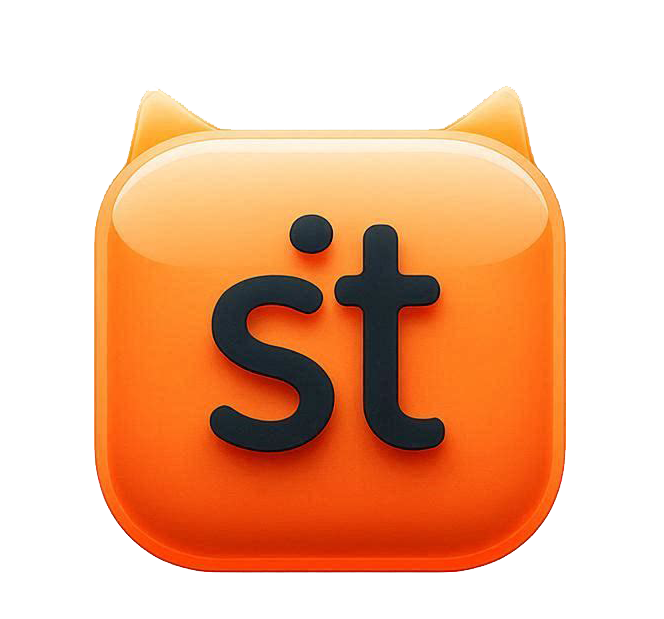
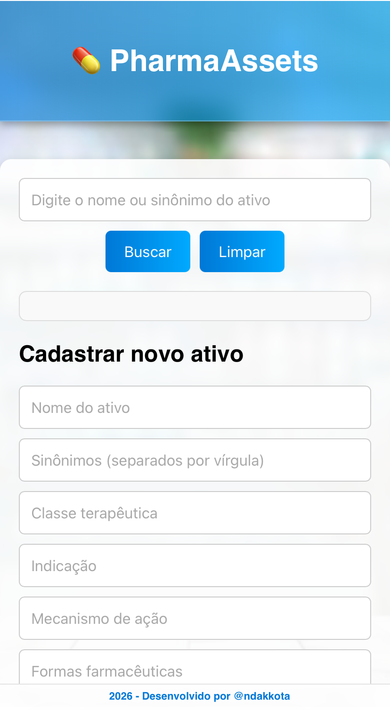
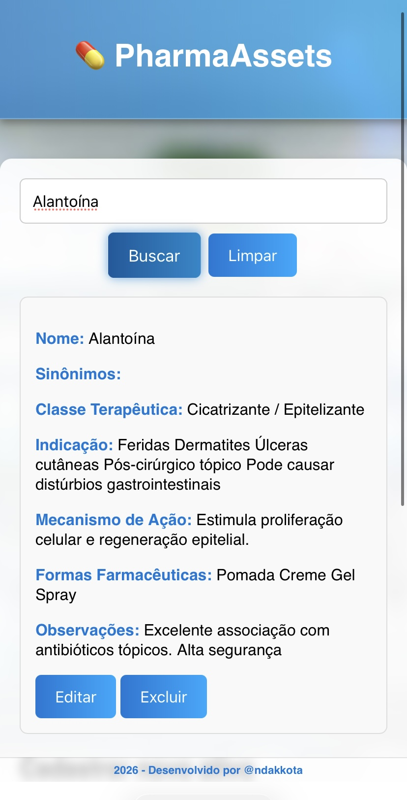
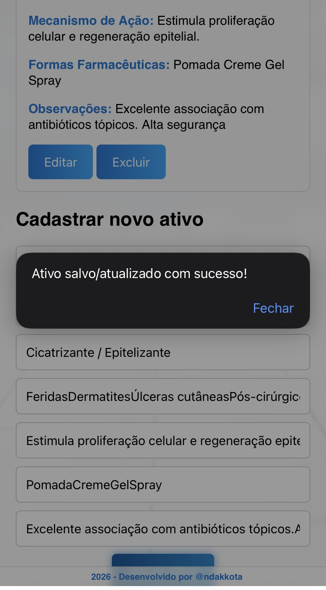
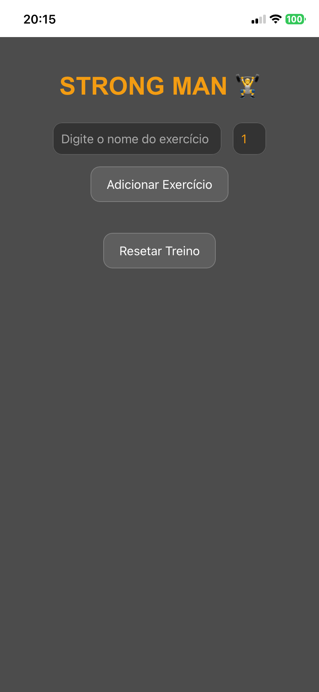
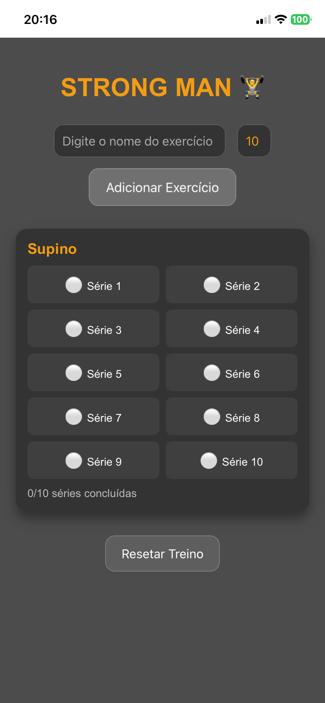
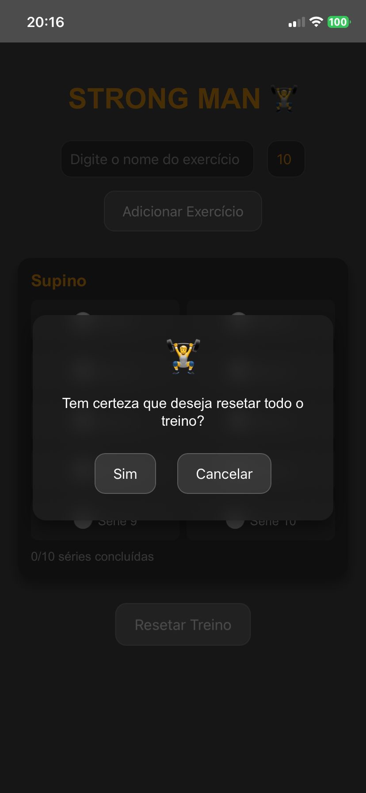
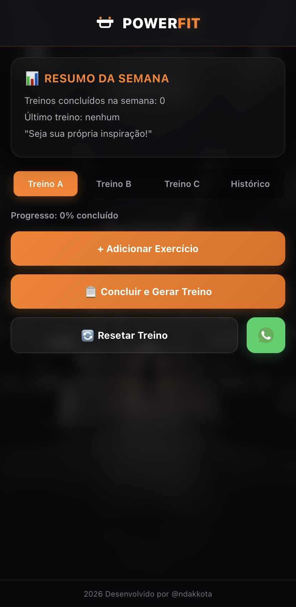
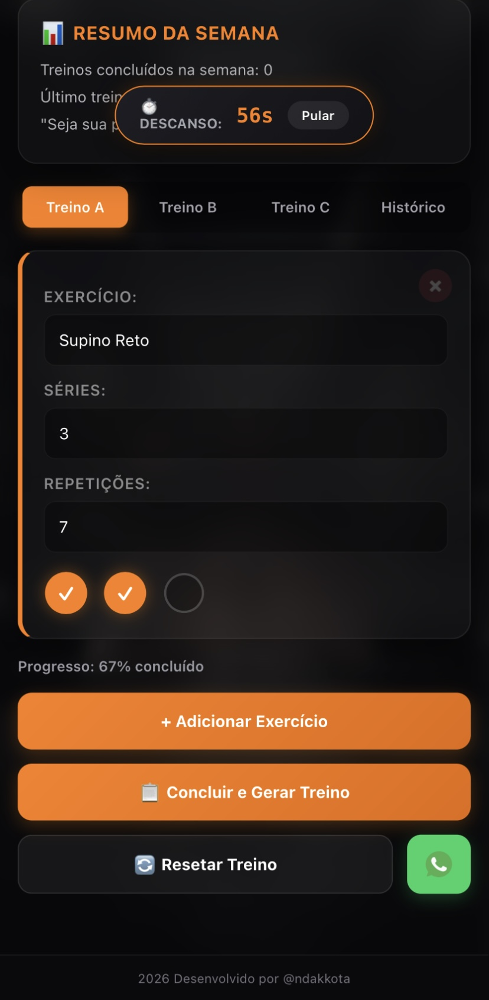
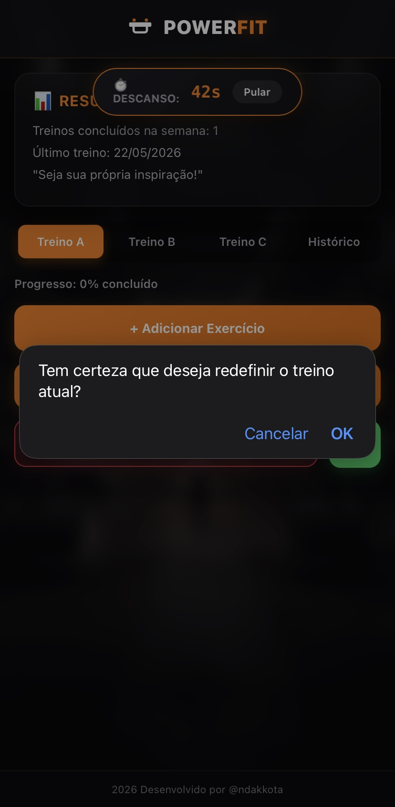

Projeto começou de forma simples, como uma tabela no Excel, mas evoluiu para uma aplicação digital de uso constante. A ideia foi transformar um recurso básico em uma ferramenta prática e interativa, que apoia tanto o estudo quanto a organização diária.



O treino GVT (German Volume Training) exige disciplina para completar 10 séries intensas, mas é comum se perder no controle durante a execução. Este projeto foi desenvolvido para resolver exatamente esse desafio: uma ferramenta digital que organiza e acompanha cada série, mantendo o foco e evitando confusões.



Aplicativo desenvolvido para organização e acompanhamento de treinos personalizados, com foco em praticidade, motivação. O PowerFit combina usabilidade e motivação, oferecendo ao usuário controle total sobre seus treinos, acompanhamento de progresso e integração com ferramentas do dia a dia.